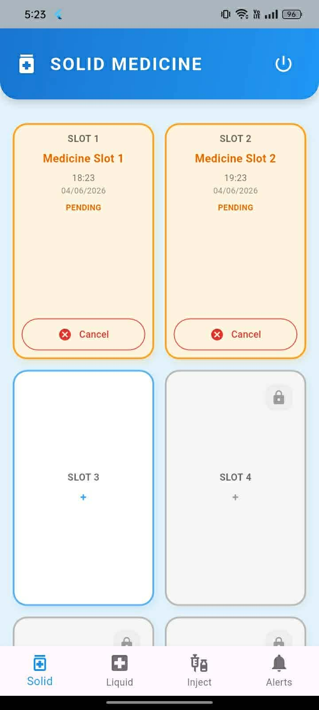
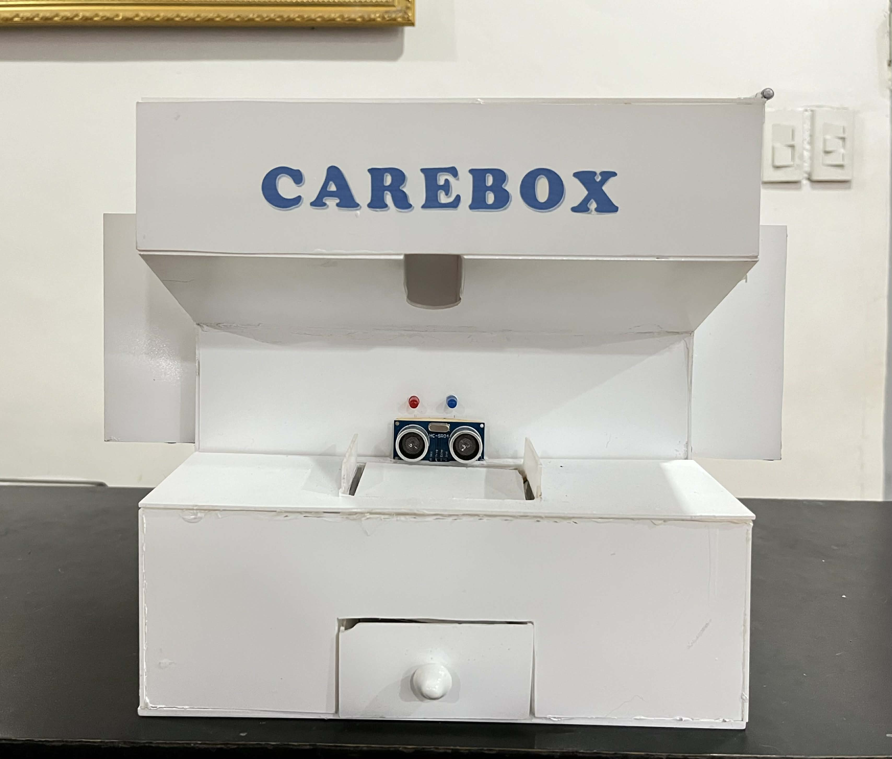
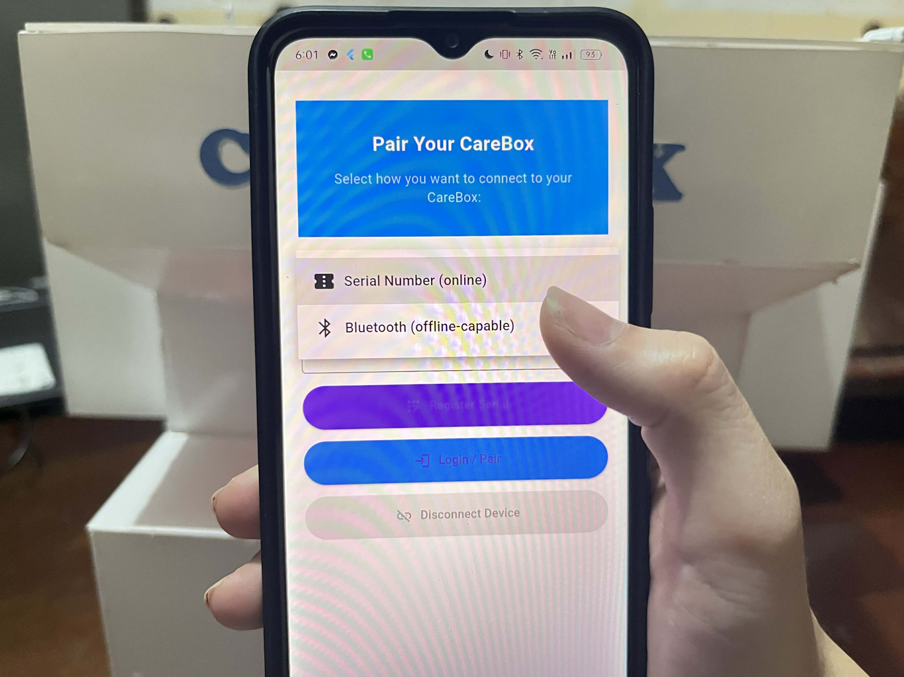
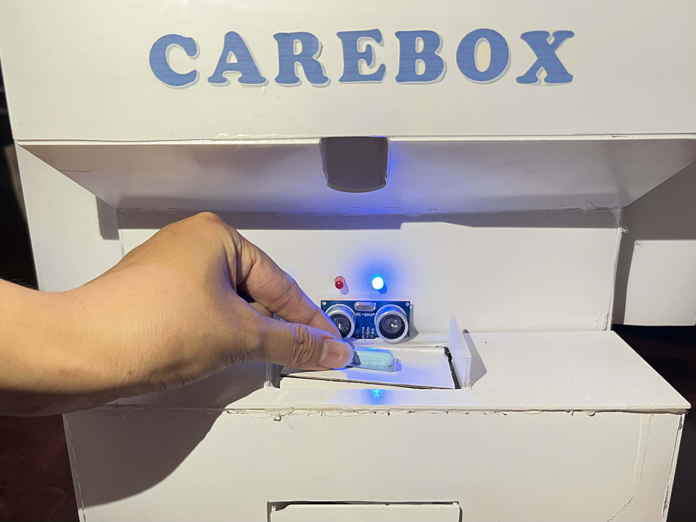

The smart solution for your medicine management.
Download the CareBox APK to start managing your medicine dispenser.
Visualizing the integration of IoT hardware and mobile management.

Mobile Dashboard

Physical Dispenser

App Pairing

Dispensing Logic
Follow these steps to set up your automated IoT medicine management system:
Power on the CareBox hardware. Open the app and pair your device using the Serial Number via Wi-Fi or Bluetooth Low Energy (BLE) for offline use.
Assign medication to one of the 12 slots in the app. Load the pills into the corresponding carousel slot in the hardware.
Organize supplies in the secondary module. Set reminders in the app and manually confirm intake once completed.
When the buzzer sounds, collect your dose. The Ultrasonic Sensor will automatically update your status to "Collected" in the app.
CareBox is an IoT-enabled medicine dispenser designed to reduce medication errors and caregiver burnout. It integrates ESP32 microcontrollers, Firebase, and Flutter to provide real-time health monitoring.
Tarlac State University | BSIT - Technical Service Management